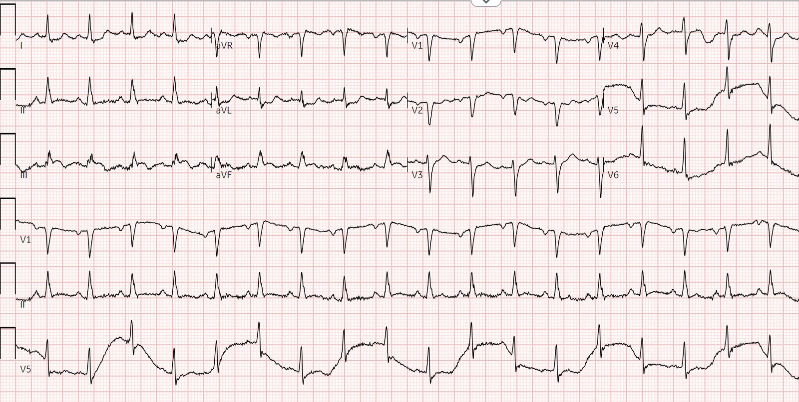
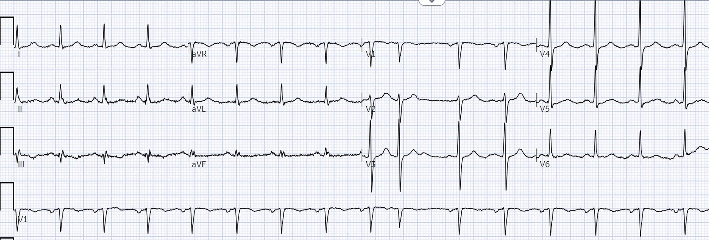
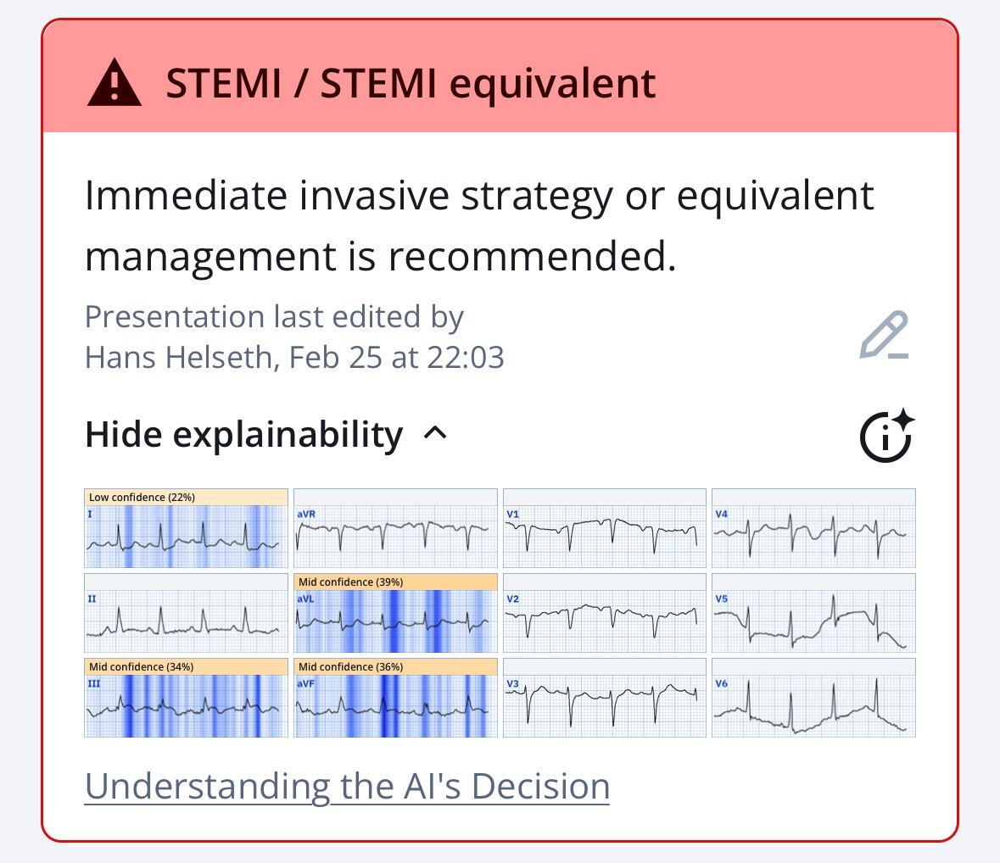
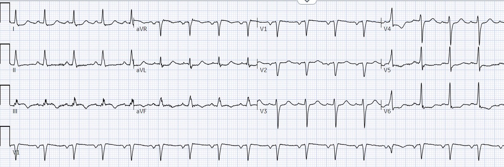
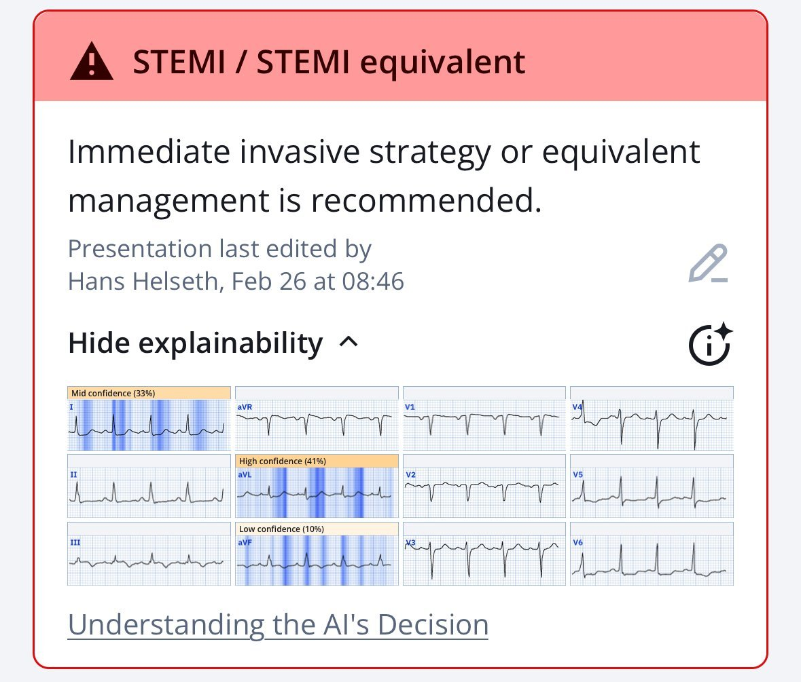
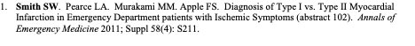
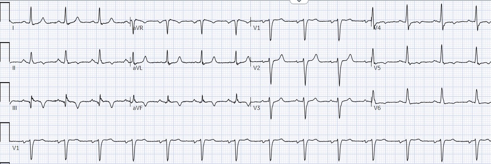
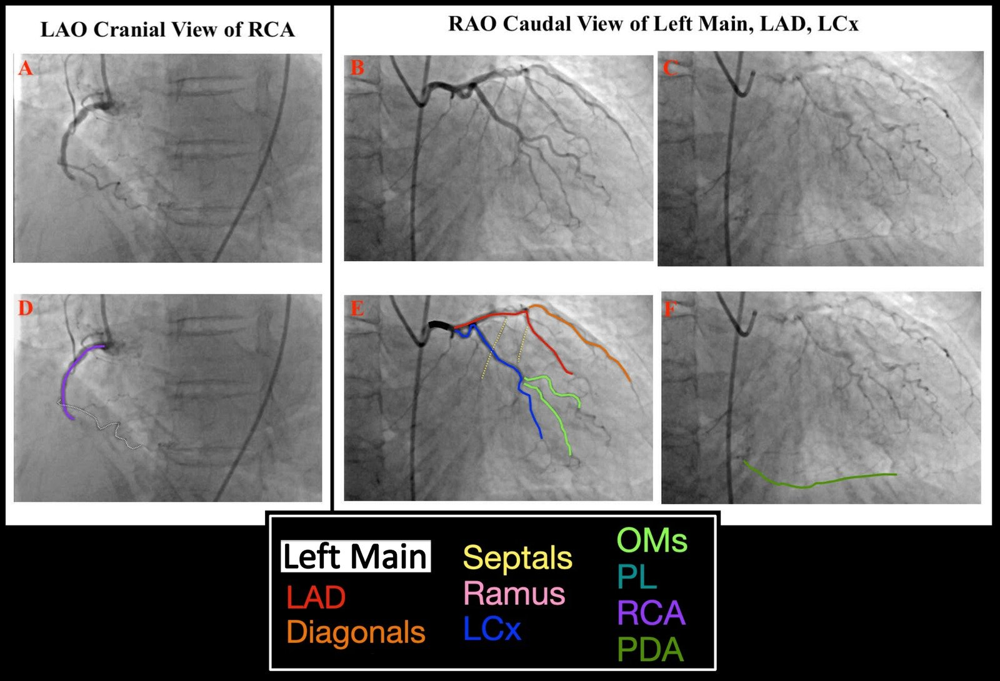
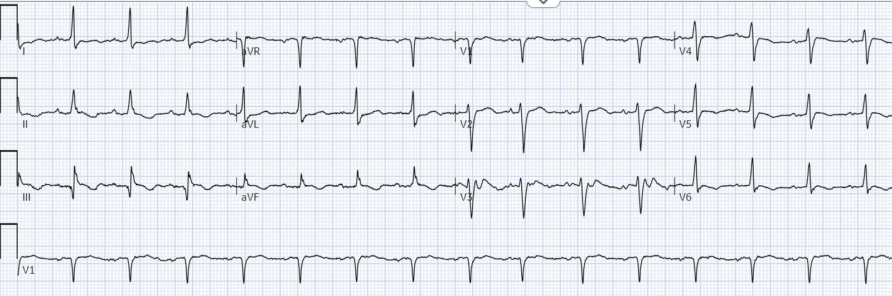
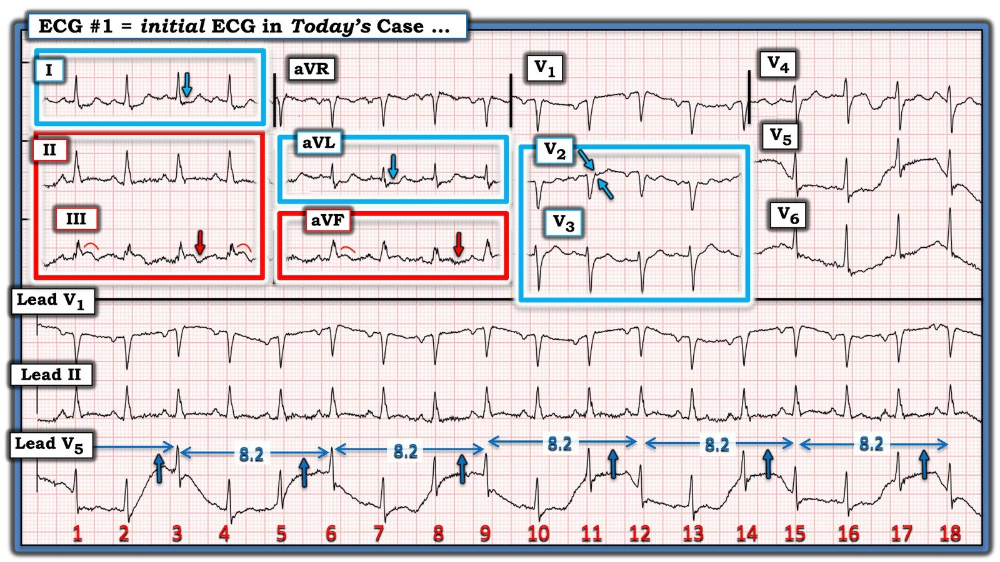

03/03/2025 — Phù phổi, kèm nhịp nhanh và OMI trên điện tâm đồ — chuyện gì đang xảy ra?
Bản dịch tiếng Việt của bài "Pulmonary edema, with tachycardia and OMI on the ECG — what is going on?" – Dr. Smith’s ECG Blog. Giữ nguyên toàn bộ 11 hình ảnh của bản gốc.
Bài này do Hans Helseth viết.
Một phụ nữ 69 tuổi có tiền sử tăng huyết áp được đội cấp cứu ngoài viện (EMS) đưa đến khoa cấp cứu để đánh giá đau ngực và khó thở. Bà thức dậy vào buổi sáng với cơn đau ngực dữ dội, đau tăng dần suốt buổi sáng. Khi cơn đau tăng lên thì khó thở cũng tăng theo. Nhân viên cấp cứu ngoài viện ghi nhận độ bão hòa oxy là 64%, nhưng bà không chịu được BiPAP trong lúc vận chuyển vì chứng sợ không gian kín. Bà đến khoa cấp cứu (ED) với mặt nạ không thở lại. Huyết áp lúc nhập viện là 153/69. Một điện tâm đồ được ghi ngay lập tức. Tình trạng đau ngực của bệnh nhân vào thời điểm này không rõ:
Điện tâm đồ 1, lúc 1300:


Có nhịp nhanh xoang và nhiễu tần số thấp lẫn tần số cao. Nhiễu tần số cao có thể do bệnh nhân run hoặc gồng cơ. Một bệnh nhân đang suy hô hấp cấp có thể không thả lỏng được trong lúc ghi điện tâm đồ, gây ra nhiễu tần số cao làm dạng sóng trông nhòe. Nhiễu tần số thấp là do hô hấp, làm đường nền đẳng điện dịch lên xuống theo thì hít vào và thở ra. Nhiễu này thấy rõ nhất ở V1 và V5 trên điện tâm đồ này. Thật ra, có thể tính được tần số thở của bệnh nhân bằng cách đo thời gian từ đỉnh đến đỉnh của đường nền ở V5, khoảng 37 nhịp thở mỗi phút.
Điện tâm đồ này cũng chẩn đoán OMI thành dưới cấp. Có nhịp nhanh, nhưng bên dưới lớp nhiễu, đoạn ST ở chuyển đạo III và aVF chênh lên, và sóng T có dạng lõm và đảo ngược ở phần cuối, gợi ý khả năng đã tái tưới máu. Chuyển đạo I và aVL có ST chênh xuống với phần cuối sóng T dương, một hình thái thường là soi gương của ST chênh lên thành dưới, biểu hiện thiếu máu cục bộ xuyên thành của thành dưới.
Smith: Tôi cho rằng ST chênh lên kèm sóng T đảo ngược này (gợi ý tái tưới máu) nằm “giữa” OMI thành dưới đang diễn ra và OMI đã tái tưới máu, và nếu triệu chứng còn kéo dài hoặc huyết động không ổn định thì nó là OMI đang diễn ra và cấp tính cho đến khi chứng minh được điều ngược lại. Không có sóng Q gợi ý nhồi máu thành dưới cũ, hay phình thành dưới là nguyên nhân của ST chênh lên. Tuy nhiên, cũng có nhịp nhanh đáng kể, tần số tim 116, và đã biết có giảm oxy máu. Mỗi khi có nhịp nhanh, tôi hoài nghi OMI, trừ khi OMI đã gây giảm nặng phân suất tống máu kèm sốc tim. Hoặc tôi nghi ngờ có OMI đồng thời với một bệnh lý khác. Chắc chắn chúng ta biết có giảm oxy máu. Tôi nghi phù phổi, nhưng chúng ta không được cung cấp thông tin về sự hiện diện của đường B trên siêu âm tại giường, hay kết quả X-quang ngực. Còn bệnh lý nào khác có thể có? Bất cứ điều gì gây phù phổi: chức năng thất trái kém, quá tải dịch, suy tim từ trước (HFrEF hoặc HFpEF), bệnh van tim. Tóm lại: khó nói ST chênh lên này được khởi phát bởi 1) một nguyên nhân dẫn đến phù phổi, rồi giảm oxy máu, rồi mất cân bằng cung-cầu, hay 2) ACS với OMI kết hợp với một tình trạng sẵn có khác đã dẫn đến giảm chức năng thất trái và phù phổi. Mất cân bằng cung-cầu có thể gây ST chênh lên (STEMI típ 2). Xem tài liệu tham khảo và phần bàn luận bên dưới. Xem thêm các bài về STEMI típ II. Xử trí?: ổn định bệnh nhân và ghi lại điện tâm đồ.
Có một điện tâm đồ từ một năm trước để so sánh:


Bác sĩ khoa cấp cứu ghi nhận “Điện tâm đồ đầu tiên tại đây được máy tính đọc là STEMI, tuy nhiên đường nền rất kém và có nhiều nhiễu. Bệnh nhân run khá nhiều và khó thở khi ghi điện tâm đồ này.”
Quả thật, thuật toán Marquette 12 SL đã nhận diện đúng “STEMI” này. Dĩ nhiên Queen of Hearts cũng nhận ra:


Dù điện tâm đồ này không thuyết phục được bác sĩ điều trị chính, một điện tâm đồ ghi lại được thực hiện một giờ sau đó, khi tình trạng hô hấp của bệnh nhân đã cải thiện:
Điện tâm đồ 2, lúc 1415:


Bây giờ ST chênh lên đã giảm. Các chuyển đạo dưới có sóng T đảo ngược, phù hợp với tái tưới máu. Vẫn còn ST chênh xuống ở chuyển đạo I và aVL, và ở các chuyển đạo bên.
Bây giờ thuật toán Marquette 12 SL không nhận diện “STEMI”, nhưng Queen of Hearts có thể nhìn xa hơn việc không có ST chênh lên. Cô ấy vẫn gọi đây là “tương đương STEMI” cần tái tưới máu cấp cứu:


Phiên bản Queen of Hearts này sẽ gọi một OMI đã tái tưới máu là “OMI.” Cô ấy không phân biệt. PMCardio sẽ khắc phục điều đó trong tương lai.
Bác sĩ khoa cấp cứu ghi nhận “Khi tình trạng hô hấp cải thiện, điện tâm đồ trông cải thiện nhiều, không có bằng chứng STEMI”.
Có kết quả hai giá trị troponin T độ nhạy cao:
Lúc 1307: 138 ng/L
Lúc 1511: 120 ng/L
X-quang ngực cho thấy phù phổi. CT không thấy PE nhưng có tràn dịch màng phổi hai bên và viêm động mạch chủ. Bệnh nhân được bắt đầu dùng lasix. Khoa tim mạch tại một bệnh viện có khả năng làm PCI được mời hội chẩn. Họ khuyên chuyển viện để nhập viện, nhưng không khuyên chụp mạch vành cấp cứu. Bệnh nhân được bắt đầu dùng heparin “vì có thể là NSTEMI hoặc thiếu máu cục bộ do tăng nhu cầu”.
Thêm các giá trị troponin được đo tại trung tâm tim mạch:
Lúc 2327: 267 ng/L
Lúc 0821: 355 ng/L
Lúc 1108: 305 ng/L
Siêu âm tim vào ngày thứ ba nằm viện cho thấy phân suất tống máu 46% với bất thường các vùng đáy thành dưới và đáy thành bên, và hẹp van động mạch chủ nặng. (Smith: “mất bù” của hẹp van động mạch chủ có thể đã khởi phát toàn bộ chuỗi sự kiện này. Điều gì “khởi phát” chuỗi sự kiện của hẹp van động mạch chủ? –hẹp tăng dần, thiếu máu cục bộ, thay đổi thể tích, tăng huyết áp, rung nhĩ, v.v.)
Cuối cùng bệnh nhân được cai oxy, thở khí trời vào ngày 4 và được chụp CT để đánh giá khả năng thay van động mạch chủ. Phim chụp cho thấy van động mạch chủ hai lá van với hẹp nặng và bệnh động mạch vành. Một tổn thương ở LAD đoạn giữa được mô tả là mức độ vừa, và hẹp RCA đoạn giữa được mô tả là “có lẽ nặng”.
Không ghi thêm điện tâm đồ nào trong thời gian nằm viện. Nhận định cuối cùng là troponin tăng thể hiện nhồi máu cơ tim típ 2 với hẹp cố định RCA và LAD sau cơn suy hô hấp do phù phổi cấp. Khoa tim mạch cho rằng các điện tâm đồ lúc vào khoa cấp cứu thể hiện “thiếu máu cục bộ dưới nội tâm mạc.”
Smith: các điện tâm đồ này KHÔNG cho thấy thiếu máu cục bộ dưới nội tâm mạc. Chúng cho thấy tổn thương xuyên thành (OMI). Đúng là có thể có ST chênh lên do nhồi máu cơ tim típ 2 (mất cân bằng cung-cầu), nhưng điều đó RẤT hiếm gặp. Tôi đã nghiên cứu vấn đề này hơn 10 năm trước và công bố bản tóm tắt này. Trong dữ liệu của chúng tôi, chỉ 4% nhồi máu cơ tim típ 2 có ST chênh lên mới. Phần lớn thiếu máu cục bộ do mất cân bằng cung-cầu là ST chênh xuống lan tỏa, kèm ST chênh lên ở aVR. Điện tâm đồ trên cùng là chẩn đoán OMI típ 1 do huyết khối cho đến khi chứng minh được điều ngược lại.


Ca bệnh tiếp diễn
Bệnh nhân được xuất viện với kế hoạch chụp mạch vành theo lịch để đánh giá động mạch vành và khả năng thay van động mạch chủ.
Một tháng sau, bà lại đến khoa cấp cứu vì đau ngực vài giờ, đã hết trước khi đến khoa cấp cứu. Một điện tâm đồ được ghi tại khoa cấp cứu:
Điện tâm đồ 3, một tháng sau:


Điện tâm đồ này thể hiện tái tưới máu thành dưới với phần cuối sóng T âm. Nhưng có sóng Q mới, cho thấy đã có nhồi máu xảy ra trong khoảng thời gian giữa hai lần — không rõ khi nào. Vẫn còn ST chênh xuống nhẹ ở chuyển đạo I và aVL.
Kết quả troponin T là 24 ng/L.
Điện tâm đồ này được đọc là không có dấu hiệu thiếu máu cục bộ, troponin được đánh giá là “đã cải thiện so với lần trước” (nghĩa là cải thiện so với giá trị 305 ng/L một tháng trước) và bệnh nhân không còn đau. Bà lại được cho về từ khoa cấp cứu mà không ghi điện tâm đồ lần hai hay xét nghiệm troponin lần hai.
Thêm một tuần rưỡi sau đó (khoảng 6 tuần sau lần đầu đến viện vì đau ngực và khó thở), bệnh nhân đến bệnh viện để chụp mạch vành theo lịch:


Có tắc hoàn toàn đoạn giữa RCA (ảnh A, chú thích ở ảnh D). Các mặt chiếu RAO ở trên cho thấy LAD và LCx (ảnh B và C, chú thích lần lượt ở ảnh E và F). Đường màu xanh lá ở ảnh F cho thấy thuốc cản quang làm đầy PDA, thể hiện tuần hoàn bàng hệ từ trái sang phải.
Bảng giải thích đầy đủ các chú thích do Willy Frick thực hiện trên các hình thông tim này có trong hướng dẫn chụp mạch vành tuyệt vời của anh ấy.
Tổn thương RCA được xử lý như một CTO và không can thiệp. Bác sĩ chụp mạch cũng ghi nhận tất cả các mạch khác có “bệnh nhẹ”.
Smith: Tôi không hiểu tại sao lại gọi là “CTO” (tắc hoàn toàn mạn tính) nếu chỉ một tháng trước đó nó chỉ là “hẹp nặng”.
Bệnh nhân lại được cho về nhà với kế hoạch phẫu thuật thay van động mạch chủ và phẫu thuật bắc cầu chủ vành (CABG) đến PDA. Hai tháng sau, bà được phẫu thuật thành công. Một điện tâm đồ được ghi sau phẫu thuật:


So với điện tâm đồ nền ở đầu bài, sóng Q ở chuyển đạo III đã tăng kích thước. Cũng có sóng T đảo ngược ở thành dưới và thành bên, nhưng đây có thể là ảnh hưởng của phẫu thuật.
Những điểm cần học:
- Dù OMI hiếm khi biểu hiện với nhịp nhanh, OMI thành dưới có biến chứng một bệnh lý tim phổi khác như phù phổi và hẹp van động mạch chủ có thể biểu hiện nhịp nhanh.
- Tắc mạch vành cấp và phù phổi cấp có thể cùng tồn tại. Phù phổi do nhồi máu cơ tim cấp đặc biệt đáng lo ngại.
- Không nên cho bệnh nhân đau ngực xuất viện khi chưa đo troponin nhiều lần liên tiếp, nhất là nếu điện tâm đồ có sóng T đảo ngược. Ở bệnh nhân OMI, giá trị troponin đầu tiên có thể thấp hoặc bình thường.
- Không nên so sánh một giá trị troponin thấp với một giá trị troponin tăng cách đó một tháng.
- Ở bệnh nhân nặng, các điện tâm đồ bị nhiễu che khuất nên được ghi lại ngay, nhất là khi người điều trị thấy nhiễu đang cản trở việc đọc điện tâm đồ ở bệnh nhân mới đau ngực.

===================================
BÌNH LUẬN CỦA TÔI, bởi KEN GRAUER, MD (3/3/2025):
===================================
Ca hôm nay khiến tôi nhớ đến một số ca chọn lọc mà tôi đã gặp trong sự nghiệp, trong đó bệnh nhân dạy cho bác sĩ. May mắn thay, qua những tuần sau lần khám đầu tiên — bệnh nhân này đã sống sót dù biểu hiện ban đầu tái diễn.
- “Tin tốt” — là cuối cùng bệnh nhân này đã được phẫu thuật thay van động mạch chủ và bắc cầu chủ vành thành công (dù điều này chỉ diễn ra sau hơn 3 tháng kể từ lần đầu đến viện — với nhiều người điều trị không nhận ra rằng thay vì “NSTEMI” hay “nhồi máu cơ tim típ II”, điện tâm đồ đầu tiên của bệnh nhân này rõ ràng đã chẩn đoán nhồi máu cơ tim do tắc mạch vành cấp).
- Để rõ ràng, trong Hình 1 — tôi đã sao lại và đánh dấu điện tâm đồ đầu tiên đó. Tôi tập trung bình luận vào việc đánh giá trong lần nhập viện đầu tiên.
Điện tâm đồ đầu tiên trong CA BỆNH hôm nay:
Như Hans Helseth đã nêu — điện tâm đồ #1 chẩn đoán OMI thành dưới cấp.
- Bệnh sử ngay lập tức xếp bệnh nhân này vào nhóm nguy cơ cực kỳ cao bị OMI. Bà lớn tuổi (69 tuổi) — và thức dậy với cơn đau ngực mới xuất hiện, tăng dần liên tục suốt buổi sáng. Do đó — bất kỳ bất thường nào có khả năng cấp tính trên điện tâm đồ đều phải được xem là OMI cấp cho đến khi chứng minh được điều ngược lại.
- Ngoài ra — bệnh nhân khó thở rõ rệt và thở nhanh (RR >35/phút) — giảm oxy máu (SpO2 = 64%) — và nhịp tim nhanh (~110-115/phút). Biểu hiện này rõ ràng cho thấy nhiều hơn một hội chứng vành cấp đơn thuần (Acute Coronary Syndrome).
- Đúng là đôi khi nhịp nhanh xoang gây ST chênh lên do chính nhịp nhanh (đoạn ST trở về bình thường khi tần số tim chậm lại). Dù vậy — không thể nhầm lẫn điểm J chênh lên kèm ST dạng vòm (coving) ở chuyển đạo III và chuyển đạo aVF (trong các hình chữ nhật ĐỎ). Sóng T đảo ngược ở phần cuối trong chuyển đạo III và aVF (các mũi tên ĐỎ) không chỉ củng cố tính xác thực của ST chênh lên ở các chuyển đạo này — mà còn gợi ý có thể đã có phần nào tái tưới máu tự phát (nhất là vì theo bệnh sử, đã qua ít nhất vài giờ kể từ khi khởi phát đau ngực).
- Dù đúng là bản ghi đầu tiên này có nhiều nhiễu — ST chênh lên bất thường rõ ràng giống hệt này thấy ở cả 7 phức bộ trong chuyển đạo III và aVF. Sự đồng nhất của ST chênh lên ở từng nhát bóp trong 2 chuyển đạo này không xảy ra nếu nguyên nhân là “nhiễu”.
- Mọi nghi ngờ về tính xác thực của ST chênh lên ở chuyển đạo III và aVF phải được loại bỏ ngay khi thấy ST chênh xuống soi gương dạng bậc thềm (shelf-like) ở cả 7 phức bộ trong các chuyển đạo bên cao I và aVL.
- Thêm một xác nhận cho chẩn đoán OMI cấp đến từ việc không có ST chênh lên nhẹ, dốc lên thoai thoải bình thường vẫn thấy ở chuyển đạo V2. Do nhiễu chuyển động hô hấp (vì bệnh nhân suy hô hấp và thở nhanh) — không có đoạn nào trong 4 đoạn ST ở chuyển đạo V2 trông giống nhau. Nhưng việc cả 4 đoạn ST này đều không có ST chênh lên nhẹ, dốc lên thoai thoải bình thường ở chuyển đạo V2 cho chúng ta biết đây là hiệu ứng thật, chỉ điểm OMI thành sau đi kèm (chứ không phải do nhiễu).
- Tôi lưu ý rằng việc đánh giá ST-T ở chuyển đạo V3 khó xác định hơn — nhưng trong bối cảnh OMI thành dưới rõ ràng ở các chuyển đạo chi — riêng chuyển đạo V2 đã chẩn đoán OMI thành sau đi kèm.
- Có lẽ một phần lý do khiến thay đổi ST-T ở chuyển đạo V2,V3 kín đáo và ST-T dẹt ở chuyển đạo V1 — là bệnh nhân này, có khả năng tắc RCA cấp, có thể kèm tổn thương thất phải làm giảm mức ST chênh xuống thường gặp trong OMI thành sau. Nên ghi các chuyển đạo bên phải.
- Cuối cùng — có ST-T dẹt bất thường ở chuyển đạo V4,V5,V6, cũng như ở chuyển đạo II. Tôi diễn giải tình trạng ST-T dẹt ở 4 chuyển đạo này là gợi ý bệnh nhiều nhánh mạch vành trong bối cảnh OMI dưới-sau cấp.


Nhiễu do chuyển động hô hấp:
Như Hans Helseth đã nêu — điện tâm đồ hôm nay cho một góc nhìn độc đáo về cách chúng ta biết tần số thở của bệnh nhân này nhanh đến vậy. Lưu ý khoảng cách đều đặn 8.2 ô lớn giữa các đỉnh chuyển động hô hấp mà chúng ta thấy ở các nhát #3,6,9,12,15 và 18.
- Cách dễ để xác định tần số tim là lấy 300 chia cho số ô lớn của khoảng R-R — và, 300 ÷ 8.2 = 37 nhịp thở/phút (như Hans Helseth đã ghi nhận).
- ĐIỂM THEN CHỐT (PEARL): Hiển nhiên chúng ta không cần đến góc nhìn này trong ca hôm nay, vì đã được cho biết bệnh nhân khó thở và thở nhanh. Nhưng nhiều người trong chúng ta có nhiệm vụ xem xét điện tâm đồ của những bệnh nhân không có mặt trước mắt mình — và việc có thể (với những điện tâm đồ như bản ghi thứ 1 hôm nay) biết bệnh nhân đang thở nhanh đến mức nào có thể là manh mối cho thấy bệnh nhân đó có khả năng nặng đến đâu.
Những điều rút ra từ CA BỆNH hôm nay:
- Nhiễu trên điện tâm đồ đầu tiên hôm nay không được cản trở chẩn đoán OMI cấp ở người phụ nữ lớn tuổi đau ngực dữ dội, mới khởi phát đột ngột này.
- Nếu có lúc nào nghi ngờ về giá trị của các dấu hiệu điện tâm đồ ở bệnh nhân mới đau ngực và có nhiễu — Đừng chờ! Hãy ghi lại điện tâm đồ đó ngay.
- Khi bệnh nhân đến với đau ngực dữ dội mới xuất hiện và có nguy cơ cao bị nhồi máu cơ tim cấp (như bệnh nhân hôm nay rõ ràng là như vậy trong lần nhập viện đầu tiên) — điện tâm đồ đầu tiên nên được ghi lại trong vòng không quá 15-30 phút.
- Chẩn đoán OMI cấp trong ca hôm nay được xác nhận theo nhiều cách (điện tâm đồ đầu tiên bất thường — thay đổi tiến triển gợi ý tái tưới máu trên điện tâm đồ ghi lại — thay đổi điện tâm đồ rõ ràng so với bản ghi trước đó một năm — troponin dương tính — nhịp nhanh, thở nhanh, giảm oxy máu và phù phổi). Lẽ ra phải thông tim ngay.
- LƯU Ý: Khi không thông tim cho bệnh nhân kịp thời — thì trong một tỷ lệ nhất định các trường hợp, bạn sẽ bỏ sót việc xác định động mạch “thủ phạm”. Khi chờ đến 6 tuần sau biến cố mới thông tim (như đã làm trong ca hôm nay) — thì bạn sẽ không biết mọi thứ trông như thế nào 6 tuần trước đó.
Điểm MẤU CHỐT: Bệnh nhân hôm nay có AS nặng (hẹp van động mạch chủ — Aortic Stenosis) làm phức tạp thêm tất cả những điều trên. Từ những gì được cho biết — mức độ nặng của AS chưa được biết trước lần nhập viện đầu tiên, nhất là khi bà có tiền sử tăng huyết áp. Và, đặc biệt ở bệnh nhân phù phổi cấp — chẩn đoán AS nặng tại giường có thể cực kỳ khó phát hiện khi nghe tim. Nhưng ít nhất vào ngày #3 — siêu âm tim đã phát hiện AS nặng.
- AS nặng làm việc xử trí phức tạp hơn rõ rệt và báo trước kết cục lâu dài kém hơn khi đi kèm nhồi máu cơ tim cấp (Abraham và cs. — Cath Cardiovasc Interv 102(1): 159-165, 2023 — Paquin và cs. — Open Heart 9(1):e002046, 2022 ).
- AS khít làm phức tạp huyết động của tuần hoàn mạch vành — bao gồm cả huyết động của dòng chảy bàng hệ (Wiegerinck và cs. — Circ: Cardiovasc Interven 8(8): e002443, 2015).
- Nhìn lại ca bệnh (phải thừa nhận là nhìn hồi cứu, và ngồi thoải mái trên ghế bàn làm việc của tôi) — Người ta không khỏi thắc mắc về khoảng thời gian cho đến khi thông tim, và khoảng thời gian cho đến khi phẫu thuật.